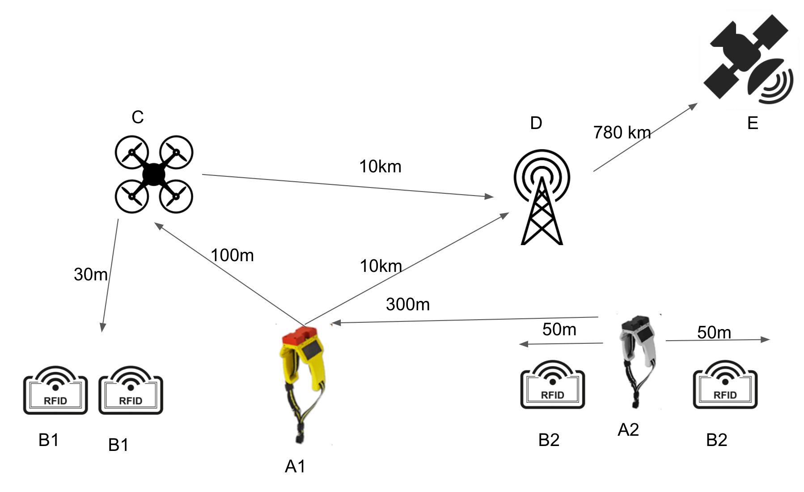

Schemat połączenia
Obroża typu master [A1] wykrywa inne obroże typu slave [A2] w odległości do 300 metrów za pomocą technologii sBLE (super bluetooth low energy). Zarówno [A1] jak i [A2] mogą wykrywać kolczyki z identyfikatorem RFID - [B1] i [B2] w zasięgu max 50 metrów. Na podstawie siły sygnału obroża [A2] określa odległość od [B2]. Następnie [A2] wysyła wszystkie dane o sobie oraz [B2] do obroży master [A1]. Ta obroża wyposażona w dodatkowe moduły GSM i GPS określa położenie każdej jednostki znajdującej się w zasięgu.
Jeżeli na terenie pastwiska znajduje się zasięg sieci GSM, obroża [A1] wysyła wszystkie dane do systemu Smart Rolnik. Jeżeli nie ma zasięgu, istnieje możliwość budowy specjalnej anteny GSM [D] na terenie pastwiska, lub wysłanie drona [C] który połączy się z obrożą [A1] za pomocą sBLE, odbierze wszystkie dane i przekaże je do systemu, jak wróci do bazy. Antena [D] łączy się z satelitą IRIDIUM [E] która przekazuje te dane do systemu Smart Rolnik. Satelita IRIDIUM krąży nad Ziemią w ogległości ok 780 km.
Jeżeli nie posiadasz żadnych obroży [A1] i [A2], dron [C] może skanować same identyfikatory RFID. Na schemacie oznaczone jako [B1]. W tym wypadku sugerowana wysokość przelotu drona to 30 metrów (zasięg maksymalny wykrywania identyfikatorów to 50 metrów).
Legenda
| A1 | obroża typu master |
| A2 | obroża typu slave |
| B1 | kolczyk RFID |
| B2 | kolczyk RFID |
| C | dron |
| D | antena GSM |
| E | satelita IRIDIUM |